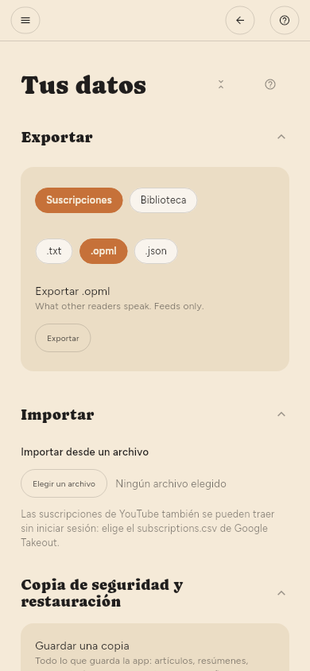

← Referencia de la configuración · Contenido
Dónde se guardan las cosas
Tu biblioteca es un único archivo SQLite en el directorio de datos de la aplicación. Hacer una copia de seguridad de ese archivo lo copia todo: artículos, resúmenes, resaltados y lo que has leído. Configuración › Avanzado › Tus datos › Copia de seguridad y restauración hace la misma copia en un solo archivo, sin tener que buscar el directorio.
